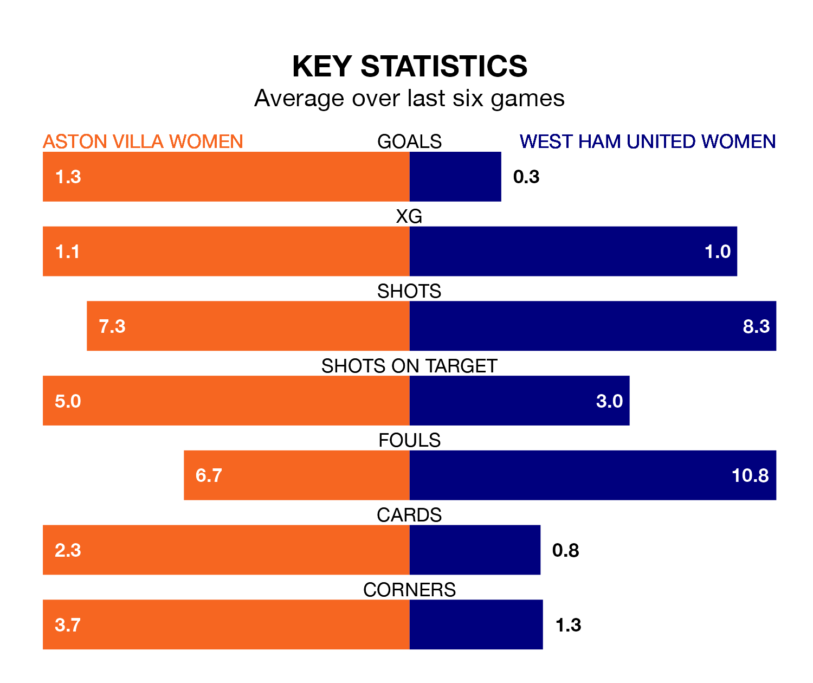

West Ham United Women come to the Poundland Bescot Stadium to play Aston Villa Women on early Sunday in terrible form, having collected just two points from their last six games.
The visitors have drawn two and lost four of their last six fixtures, while the Villa have two wins and a draw.
West Ham United are 11th in the table after 19 games, of which they have won three and drawn four, earning 13 points.
Aston Villa are four places ahead of the Hammers in seventh, with six wins and two draws putting them on 20 points.
In the last 10 years, Aston Villa and West Ham United have played each other on nine occasions. Aston Villa won two of them, West Ham United three, and they drew four times.
On average, the Villa scored 1.0 goal and the Hammers 1.1 in those matches.
Their last meeting was on November 19, when Aston Villa won 3-2 away.
With 17 goals in 19 games so far this season, the away team are the league's joint-second-lowest scorers with 0.9 goals per game. And they are conceding more than average, letting in 40 goals at a rate of 2.1 per game.
The Villa are also below average scorers, with 1.3 goals per game, compared to a league average of 1.7. They have conceded 2.1 goals per game.
In Rachel Daly, the hosts have one of the league's most on-form strikers so far this season. She has notched seven goals in 17 appearances, to sit ninth in the scoring charts.
Her goal rate of one every 218 minutes is quicker than that of Viviane Asseyi, West Ham United's top scorer with a goal every 273 minutes, and a total of six goals in 19 games.
Aston Villa's last match was on April 17, a 3-0 loss against Chelsea Women.
West Ham United lost 5-0 against Manchester City Women last time out, on Sunday.
Updated: 07:59 (UTC), 26/04/24